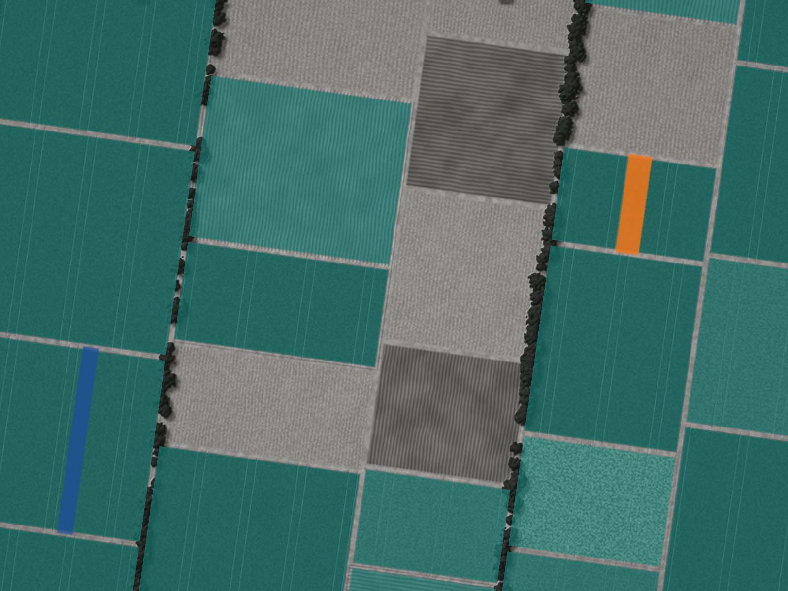
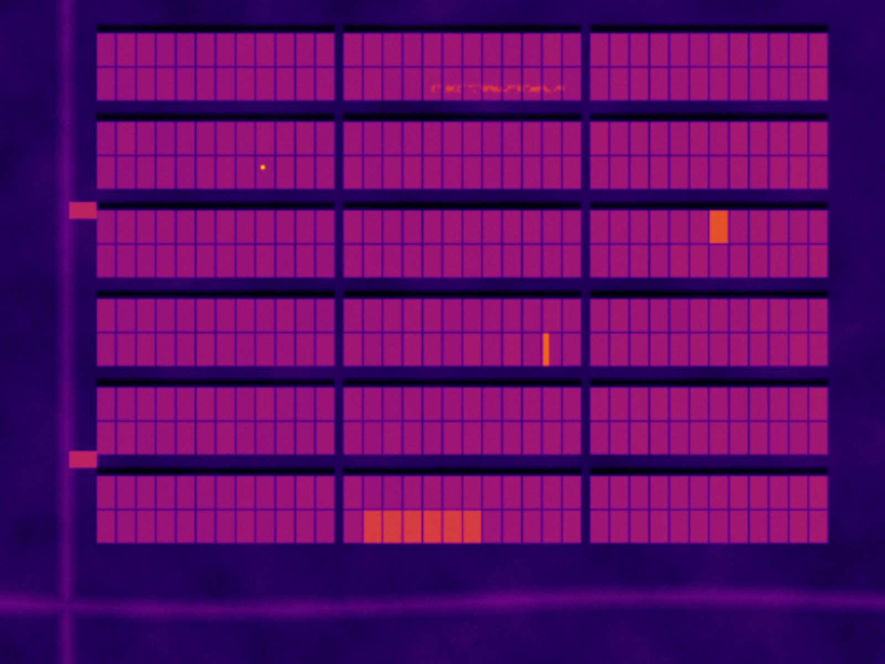
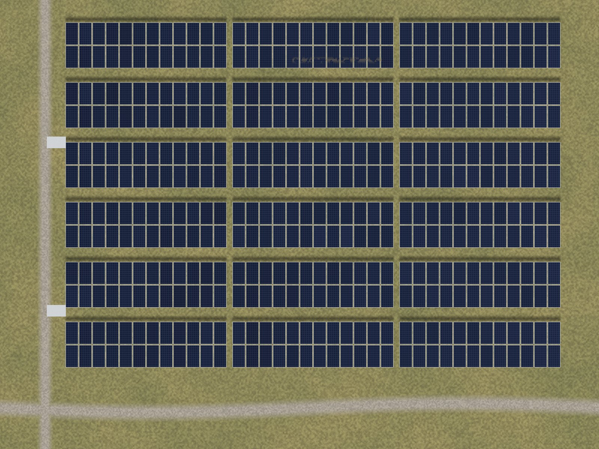
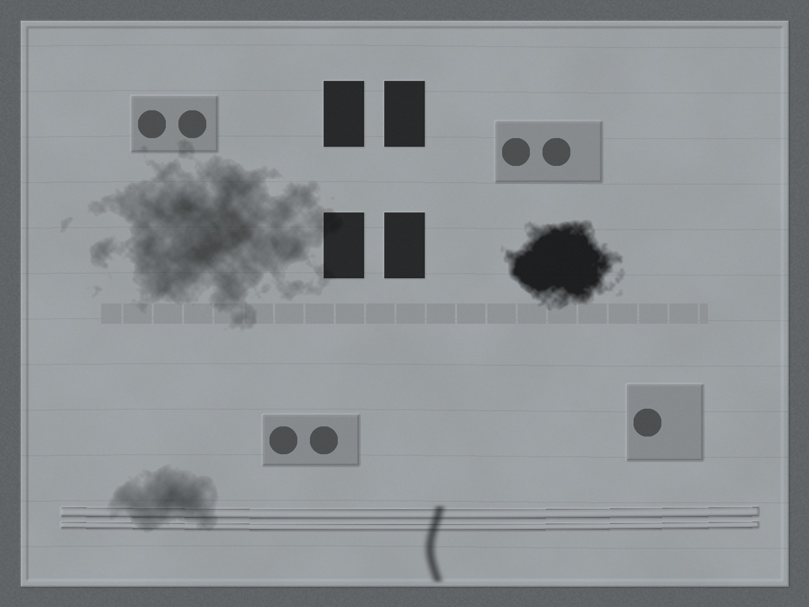
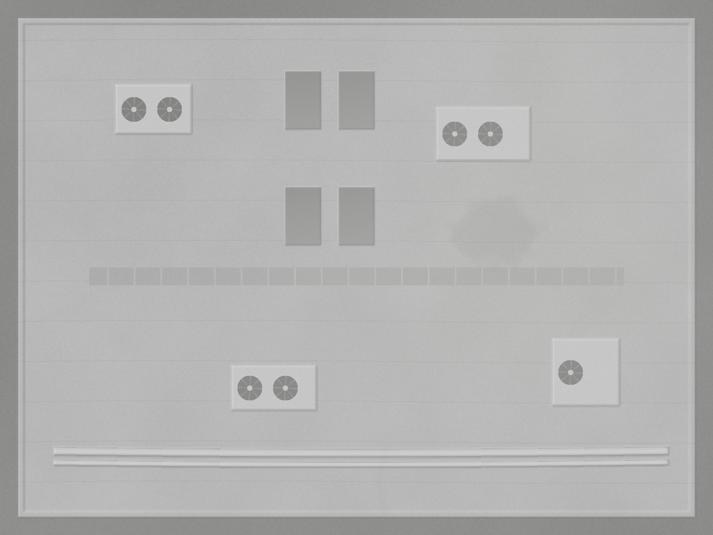

One platform. Five ways to win.
Same drone, same dashboard, a different band for each job. Pick a market to see what the camera finds.

 Visible
NDVI
2 stressed zones · 0.29 ac flaggedStress shows in the red edge and near infrared days before it shows in colour. Scout the patch, not the farm.Explore crop monitoring →
Visible
NDVI
2 stressed zones · 0.29 ac flaggedStress shows in the red edge and near infrared days before it shows in colour. Scout the patch, not the farm.Explore crop monitoring →

Visible
Coverage
1 missed strip · 1 overlapA camera at the back of the sprayer logs every pass and flags missed strips and overlaps before the drone lands.Explore spraying →


Visible Thermal 5 hotspot candidates in one passHotspot candidates become reviewed findings, repair jobs and a report the site owner signs off.Explore solar inspection →

Visible SWIR Ponding · wet insulation · pipe leakWet insulation, ponding and leaks read dark in short-wave infrared, and haze mostly drops away.Explore industrial inspection →
 Week 3
Week 11
+9 floors of frame · glazed to level 8The same flight every week: what was built, what moved and how much material is left.Explore construction monitoring →
Week 3
Week 11
+9 floors of frame · glazed to level 8The same flight every week: what was built, what moved and how much material is left.Explore construction monitoring →